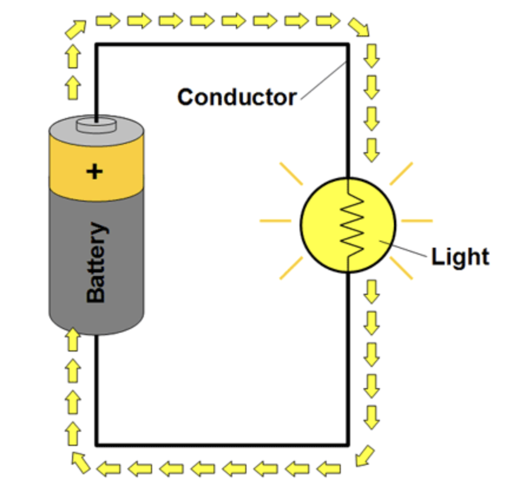
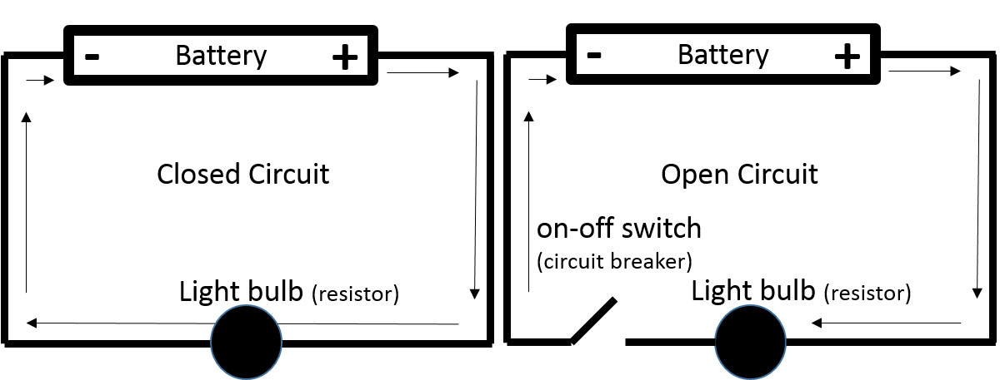
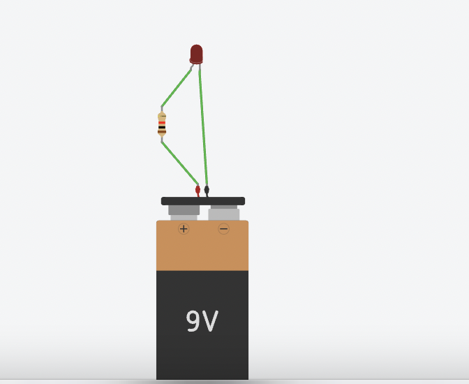
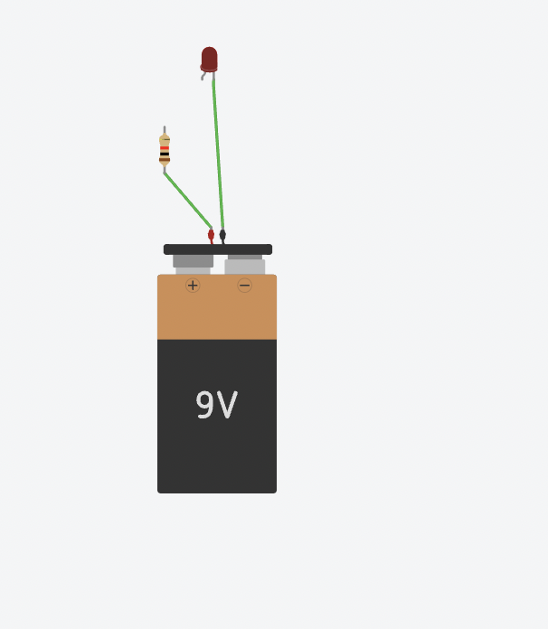
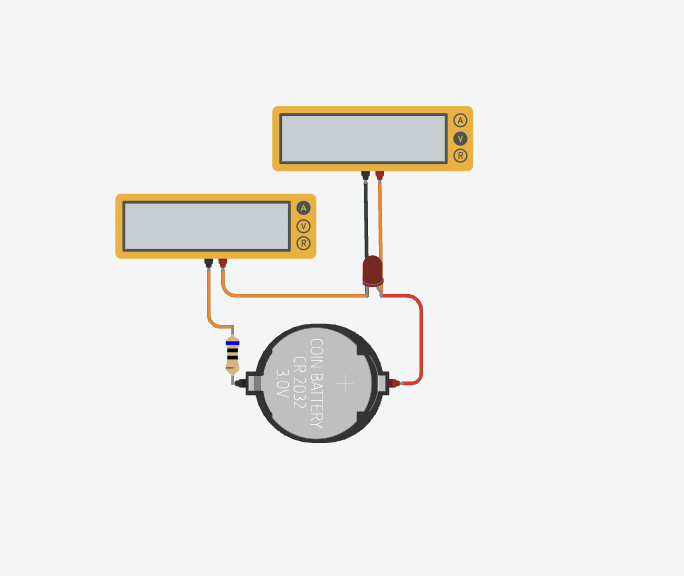
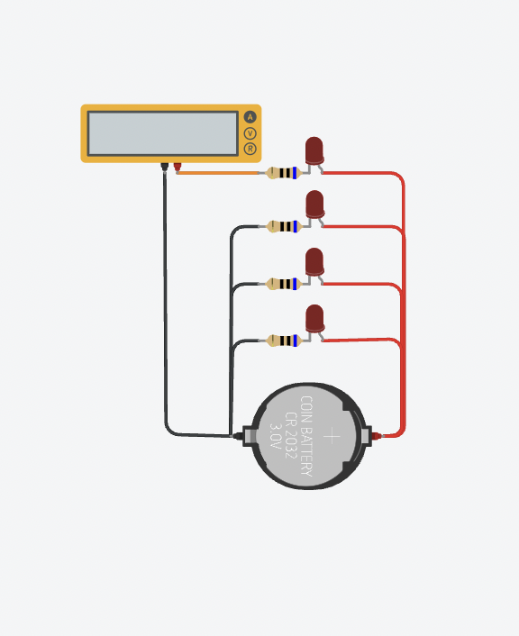
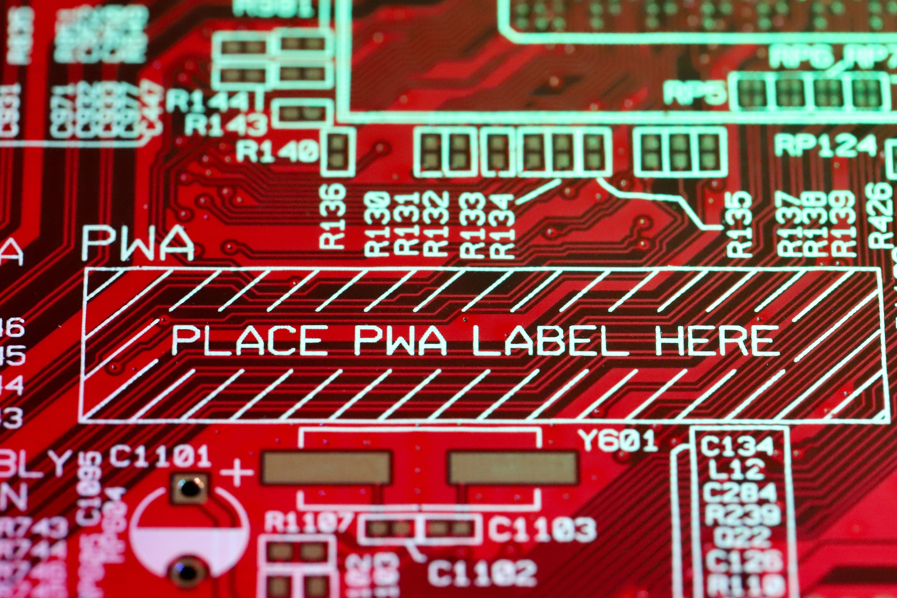

What You Should Know - Tinkercad Circuits: Create a Stoplight
 Important Vocabulary
Important Vocabulary
- Circuit – a path for electricity to flow
- Open Circuit – a path has been interrupted or opened and the current will not flow
- Closed Circuit – a complete path with a flow of current
- Series Circuit – all components are connected end-to-end to form a single path for current flow
- Parallel Circuit – branched off so that the current divides and only part of it flows through any branch
- Resistor – In electronic circuits, resistors are used to reduce current flow, adjust signal levels and divide voltages
Circuits
Electricity flows from a power source (like a battery) along a path (a wire or another conductive material) to a load (an electrical device like a light), and then back in a loop.
All circuits have these three parts:
- power source (battery)
- load or resistor
- conductor (wire path)
A load is also called a resistor because it creates resistance between the two ends of the power supply. The resistor needs electricity to work and as it does, it reduces the current flow. In this example, the resistor is a light. As the bulb uses some of the electricity to light up, it reduces the current.

Closed Circuits
In order for electrical current to flow, the circuit must be closed. A closed circuit is a closed path (or loop) where electrical current can flow.
Open Circuits
If there is a break anywhere in the path, the electricity cannot flow and it is called an open circuit.

An electrical path can accidentally be broken, or you can use a switch to control the flow of electricity. When a switch is "on," it connects the two sides of the path, closing it and letting the current flow through. When it is "off," it breaks the connection; the path is open and current cannot flow through. This is why an on-off switch is sometimes called a circuit breaker.
To activate the components in Tinkercad Circuits, you must create a closed circuit. You can test to see if you have connected all components correctly in a closed circuit by running a simulation. If your components such as lights, speakers, and motors do not work when you click "Start Simulation," you will need to troubleshoot to figure out where your connection is broken.


Series and Parallel Circuits
Series Circuit
A series circuit is where the components are connected end-to-end in a line. In this circuit there is only one path for the current to flow.

An example of a series circuit would be older christmas lights.
Parallel Circuit
A parallel circuit is a circuit where all components are connected across each others. In this circuit there are many paths for current to flow, but only one voltage across all components.

An example of a parallel circuit is the wiring system of a house. If one light burns out electrical current can still flow through the rest of the lights and appliances.
Stoplights
Traffic lights also known as stoplights are devices that signal drivers, bikers and pedestrians at road intersections. Stoplights help control the flow of traffic and help people to stay safe.

Stop lights consist of three signals to help send information to drivers, pedestrians, and bikers. Red means stop, yellow means slow down and begin to stop, and green means go. Stop lights can be vertical or horizontally positioned.
Career Connection and Real-World Application
Software Engineer
A software engineering is the branch of computer science that deals with the design, development, testing, and maintenance of software applications. Software engineers build solutions for their users. If their customers are using a software program that isn’t working correctly for their need, a software engineer will fix that problem.

Circuit Design Engineer
A circuit design engineer develops electronic circuitry found in analog devices such as a computer, smartphone, or television. As a circuit design engineer, your job duties include developing circuit equipment, designing the latest advances in circuits and troubleshooting after installation.
